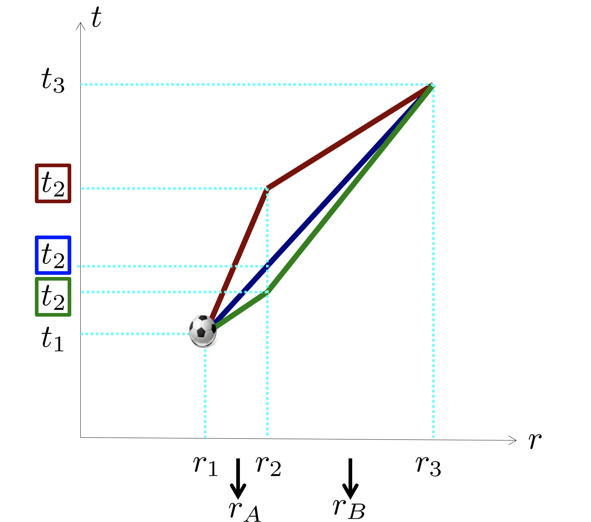

Forrige side🙂 🙁Maksimal aldringPADLET

I videoen ser vi at uttrykket som er bevart $$\left(1-\frac{2M}{r}\right)\frac{\Delta t}{\Delta\tau}$$ kan skrives som $$\sqrt{1-\frac{2M}{r}}\frac{1}{\sqrt{1-v_\mathrm{sh}^2}}$$
der vsh er farta målt av en skallobservatør som er på akkurat det skallet som ballen er i et gitt øyeblikk. Vi ser at denne størrelsen forteller oss at ballen sakker farten sin når den er på vei oppover i tyngdefeltet: Hvis dette skal være en bevart størrelse, og hvis r øker (ballen beveger seg oppover), ja da må vsh minke for å bevare denne størrelsen! Ser du det?
Men hva i allverden er dette for en størrelse? Som vi så i del 2B så er et typisk triks for å tolke relativistiske størrelser å gå til grensen med lave hastigheter og i dette tilfellet også svake gravitasjonsfelt. Ved svake gravitasjonsfelt, altså langt fra sorte hull bør vi få tilbake noe Newtonsk. I denne videoen
rekkeutvikler vi og tolker uttrykket.